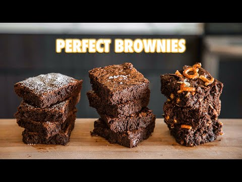

Fudgey Brownies

Good brownies don't come from boxes, they come from the heart. By that I mean, lots of good butter, and made completely homemade.
Ingredients
- 170 g butter, melted
- 282 g granulated sugar
- 73 g flour
- 80 g cocoa pow
- 3 g salt
- 2g instant espresso
- 2 eggs
- 10 g vanilla extract
- 113 g dark chocolate chopped
- Top with flakey salt
Instructions
- Whisk flour, cocoa powder, sea salt and espresso powder and set aside.
- In medium large bowl add sugar, melted unsalted butter, room temperature egg one at a time, and 1 tbsp (10 g) vanilla extract.
- Mix in flour mixture with the wet ingredients until nice, smooth and glossy.
- Fold in dark chocolate.
- Add mixture to greased parchment lined 8x8 baking pan.
- Bake at 350 degrees F, 175 C 35-40 minutes or until toothpick inserted comes out clean. Let cool to room temp before cutting.
- Use a metal pan over glass when baking to make cutting friendlier.
- Top with flakey salt.